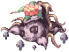
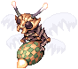
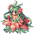
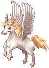
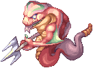
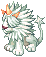
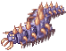
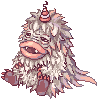
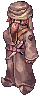

Episode 13.1: Ash Vacuum¶
The Three Kingdoms Alliance has found a dimensional rift in the Sograt Desert near Morocc. Through it lies the
Ash Vacuum, the "other world" of Splendide and Manuk, where the Midgard Expedition has set up camp
(mid_camp). This episode takes you from the recruiters in Rune-Midgarts through the rift, settles you in at the
Expedition Camp, and then sends you after the lost expedition report and the Dandelion agent Rayan Moore.
- Level: Base Level 70 or higher to pass through the rift.
- Starts at: the Recruiter in Prontera Castle,
/navi prt_cas 207/165.
Before you start¶
- Base Level 70. The Izlude Promotional Staff checks it during the first chapter. If you take the Cat Paw shortcut instead, Agent Geck checks it too.
- Items for chapter 1: 300 Jellopy #909, 1 Emerald #721 and 1 Ruby #723.
- Zeny (shortcut only): 50,000 zeny if you pay the Cat Paw Agent instead of doing chapter 1.
- Several camp NPCs refuse to talk to you if you are close to your weight limit. The camp guide Marian wants at least 1,000 free weight. Empty your bag before you start.
- Chapters 3 and 4 need you to have entered the Ash Vacuum through either chapter 1 or the shortcut. The expedition commander (chapter 3) also wants you to have helped around the camp first. Finishing chapter 2 is enough for that.
Shortcut: the Cat Paw route
If you don't want to do the recruitment chain, talk to the Cat Paw Agent (Agent Geck) on the Eden Group's
second floor (/navi moc_para01 44/19) at Base Level 70 or higher. Choose "Why don't you collect it
yourself?", then "I also want to go and help the merchants.", sign with any text and pay 50,000 zeny. He
sends you to the rift field. Talk to the small Cat at /navi moc_fild20 368/197 to climb the wall, then to
Tat at /navi moc_fild22b 182/179 to cross to the camp. This counts as having entered the Ash Vacuum for
every later chapter, but you skip chapter 1's EXP.
Story path¶
Chapter 1: Onward to the Other World¶
Every step in this chapter appears in your quest log as Onward to the Other World.
- Recruiter, Prontera Castle,
/navi prt_cas 207/165. Choose "Yes, I am interested." He sends you to Aldebaran. - Promotional Staff, Aldebaran,
/navi aldebaran 127/138. Choose "I have something for you." - Talk to the same Promotional Staff again with 300 Jellopy #909. They are taken from you.
- Promotional Staff, Geffen,
/navi geffen 90/67. Choose "The Staff in Aldebaran sent me." - Talk to him again with 1 Emerald #721. It is taken from you.
- Talk to him again with 1 Ruby #723. It is taken from you.
- Promotional Staff, Izlude,
/navi izlude 102/171. Choose "I have something for you." If you are below Base Level 70 he turns you away. Come back at 70. - Go back to the Recruiter at
/navi prt_cas 207/165and choose "Ash-Vacuum?". You receive 66,000 Base / 21,000 Job EXP, and he sends you to Lighthalzen. - The Guide at
/navi lighthalzen 220/292points you to the Rekenber building. Go to Sikaiz,/navi lhz_in01 132/259, and talk to him three times, picking "Sure." and "The three kingdoms..." when they come up. - Alliance Manager, Prontera Castle,
/navi prt_cas 19/98. Pass on Sikaiz's message. - Go back to Sikaiz twice. The second time he sends you to Rachel.
- Alliance Manager, Cheshrumnir (Rachel temple),
/navi ra_temple 119/113. Deliver the message. - Go back to Sikaiz twice. The second time, type your character's name exactly to register.
- Officer A or Officer B, in the banquet hall downstairs,
/navi lhz_in01 32/22. Talk twice. - Go to the Time-Space Gap in the Sograt Desert. Either walk to the Rift Guard at
/navi moc_fild20 349/179and ask to enter, or ask the guard at/navi lhz_in01 130/232to send you there. Then talk to Munkenro, the new head of the Alliance, at/navi moc_fild22b 230/197. - The test. Talk to Munkenro again and choose "Ready!!". 80 hostile Allied Soldiers (Lv 61, using
 Mobster #1851 stats) spawn across the field and attack. Kill 40 of them and the attack is called off.
Then report back to Munkenro. You receive 66,000 Base / 21,000 Job EXP and the quest completes.
Mobster #1851 stats) spawn across the field and attack. Kill 40 of them and the attack is called off.
Then report back to Munkenro. You receive 66,000 Base / 21,000 Job EXP and the quest completes. - Talk to Munkenro once more and choose "Yes, of course!" to go to the Midgard Expedition Camp
(
mid_camp).
The test is shared and timed
Only one test can run on the field at a time. If someone else's is running, Munkenro asks you to come back later. The attack lasts 15 minutes from the moment it starts. Kill your 40 soldiers and report to Munkenro before the 15 minutes run out. If the timer expires first, you fail and have to start the test again.
From now on you can return to the rift from Morocc: the Time-Space Gap Guard at /navi moc_ruins 137/89
sends you to the rift field, and Munkenro sends you on to the camp.
Chapter 2: New Surroundings (camp introduction)¶
This chapter introduces the camp. You need it, or other camp quests, before chapter 3 opens.
- Marian,
/navi mid_camp 222/283. Answer either way. You receive a Chocolate Pie #12322. Quest log: New Surroundings. - Instructor Lugen,
/navi mid_camp 261/284. Choose "Yes." - Receptionist Brink, inside the camp building,
/navi mid_campin 106/122. Choose "I am here to register." You receive a Chocolate Pie. - Instructor Lugen again. You receive a Chocolate Pie and New Surroundings completes.
- Diego, beside the broken tent,
/navi mid_camp 266/263. Choose "Help him." Quest log: Repairing the Tent. He wants 20 Ordinary Branch #6042 and 20 Strong Vine #6041:- Branches come from the five Trees on
spl_fild02(for example/navi spl_fild02 348/76,232/145,380/197,304/151,183/235). Each click has a small chance to give one, so keep clicking. - Strong Vines drop from

Nepenthes #1988.
- Branches come from the five Trees on
- Bring both to Diego.
- Click the first Post at
/navi mid_camp 267/263. Keep choosing "Tie it with the vines." until it holds, then choose "Knot it." - Do the same on the second Post at
/navi mid_camp 267/258. - Talk to Diego. You receive 5 Chocolate Pies and he sends you into the camp building.
- Step on the spot where you arrive, then talk to Lucas,
/navi mid_campin 295/128. Choose "Dangerous way?" You receive a Chocolate Pie. - Instructor Lugen. Quest log: Delivering Supplies.
- Marian. You receive 3 Supply Box #6045. If you lose boxes later, Marian replaces them.
- Instructor Lugen, then Jan at
/navi mid_camp 160/298. He takes 1 Supply Box. - Instructor Lugen, then Gerard at
/navi mid_camp 30/168. He takes 1 Supply Box. - Instructor Lugen, then Alberto on the Manuk field at
/navi man_fild01 80/248. He takes the last box. - Instructor Lugen twice. On the second visit choose "Help." You receive a Letter from Lugen #6043. Quest log: To My Friend.
- Otto,
/navi mid_camp 123/290. You receive a Letter from Otto #6044 and a Chocolate Pie. - Take Otto's letter back to Instructor Lugen. You receive 100,000 Base / 10,000 Job EXP, an Old Purple Box #617 and 5 Chocolate Pies.
Jan, Gerard and Alberto each also give you a Chocolate Pie when they take a box.
Chapter 3: Report from the New World¶
- Hibba Agip, the expedition commander, inside the camp building,
/navi mid_campin 90/121. Quest log: Call from the commander. - Staff Officer Abidal, next to him,
/navi mid_campin 94/118. Accept the mission with "Yes." Quest log: Commander's Duty. - Hibba Agip. You receive an Expedition Report #11012. Quest log: Report to Midgard.
- Expedition Messenger, just inside the camp entrance,
/navi mid_camp 206/286. Whether you choose "Give the report." or "Protect the report.", the messengers are ambushed and the report is scattered. Quest log: Report to the continent - Accident! - Hibba Agip, then Staff Officer Abidal. Quest log: Report to the continent - Location of reports.
- Collect Part of a Report #6040. Pages come from two sources:
- Special monsters on four fields:

Luciola Vespa #1994 and
Pinguicula #1995 onspl_fild02, Luciola Vespa #1994,
Cornus #1992 and
Naga #1993 onspl_fild03, Nepenthes #1988 and
Hillthrion #1989 onman_fild01,
Centipede #1987 and
Tatacho #1986 onman_fild03. Each kill of one of these quest spawns gives one page. They respawn every 10 minutes. - The four Expedition Scouts (
/navi man_fild01 315/95,/navi man_fild03 202/251,/navi spl_fild02 295/368,/navi spl_fild03 172/71). Choose "Ask about search results." to get 0, 2, 3 or 5 pages. You can ask once every 30 minutes.
- Special monsters on four fields:
- Hand pages to Abidal 10 at a time ("Submit found pages."). Each batch of 10 either restores a new volume, duplicates one you already have, or fails, at random. You need Vol 1 to Vol 4 (Expedition Report Vol1 #11013 to Expedition Report Vol4 #11016). Expect to need well over 40 pages.
- When you hold all four volumes, choose "Check the report's restoration status." Abidal binds them into a new Expedition Report. Quest log: Report to the continent - Success to restore!
- Hibba Agip gives you 3 Expedition Reports. Quest log: Report to the continent - Report to the continent.
- Deliver one report to each official, in any order:
- Laur, Prontera Castle,
/navi prt_cas 108/265 - Nuria, Cheshrumnir in Rachel,
/navi ra_temple 122/174 - Gerhart, Lighthalzen (Rekenber building),
/navi lhz_in01 110/174
- Laur, Prontera Castle,
- Return to Hibba Agip. You receive 300,000 Base EXP and 3 First Aid Kit #12110, and the quest completes.
Lost a report?
If you lose the restored reports before delivering all three, Hibba Agip hands out a fresh set when you talk to him.
Chapter 4: Pursuing Rayan Moore¶
Every step in this chapter appears in your quest log as Pursuing Rayan Moore.
- Pursuit Party Leader (Echinacea), in the camp building,
/navi mid_campin 68/185. She assigns you to Mr. Kidd. - Mr. Kidd, by the gate,
/navi mid_camp 199/311. Choose "Echinacea...", then "No, I don't mind at all." He sends you to Morocc. If you answer "Yes." instead, Echinacea scolds you and you have to go back to Kidd. - In Morocc, walk onto the tavern entrance next to the boy at
/navi morocc 43/108. Talk to the Bar Master at/navi que_job01 82/95and choose "About the mission". - Pass the door at
/navi que_job01 80/77and enter the room at/navi que_job01 51/44. You get 4 minutes inside, and only one player can be inside at a time. Talk to Rin: choose "Mr. Kidd sent me.", then talk again. - Rin sends you southwest of Hugel. Click the Heap of Earth at
/navi hu_fild04 235/103and choose "Take a careful look." You get a Crystal Of Feardom #6027. - Go back to Rin (same room). She gives you the Morocc Tracing Log #6029.
- Bring the crystal and the log to Mr. Kidd. You receive 20,000 Base / 1,000 Job EXP.
- Talk to Mr. Kidd again to be sent to Rin's last location. Kill the 5

Dandelion Member #1985, then search the Corpse at/navi que_dan01 49/36and choose "Check his pockets." to get a Sealed Scroll #6028. After 5 minutes you are pulled back to camp automatically. Only one player can be inside at a time. - Back at camp, talk to Mr. Kidd. He sends you to Echinacea for a scholar.
- Pursuit Party Leader: choose "Who?". She sends you to Defaria.
- Defaria,
/navi mid_camp 256/272. Choose "Got it." Bring him 30 Holy Water #523, 30 Rune of Darkness #7511, 30 Bloody Rune #7563 and the Sealed Scroll. - Talk to Defaria again. You get the Unsealed Magic Spell #14595.
- Show it to Mr. Kidd, then use the Unsealed Magic Spell. It teleports you to
yuno_fild09. Walk into the hidden basement at/navi yuno_fild09 234/133and step onto the side door. You overhear Rayan and are sent back to your save point. - Mr. Kidd, then go back to the basement door and choose "Enter." Talk to the Man at
/navi que_dan02 115/53(Rayan). You are sent back to your save point again. - Mr. Kidd. He gives you the Crystal of Feardom and the Morocc Tracing Log again for Rin.
- Back in the Morocc tavern, enter the room at
/navi que_job01 51/44(4-minute limit again). Talk to Rin while she questions Rayan, then talk to her again. She gives you a pattern number. Write it down: it is one ofSDHF92F-SDF,VWNM94GVWN90orCM3-TRDFGHE0. - Pursuit Party Leader: type the pattern number exactly. If you forget it, Rin repeats it.
- Talk to the Pursuit Party Leader until she says the trace is ready. It can take a few tries.
- Manager, at the building with the mana detector south of the camp,
/navi mid_camp 191/206. - Pursuit Party Leader once more. You receive 120,000 Base / 20,000 Job EXP and an Old Purple Box #617, and the quest completes.
Optional epilogue
Talk to the Pursuit Party Leader again and choose "Something is bothering me..." to start a short follow-up (Case closed?). Defaria wants 20 Potato #516 and 30 Log #7201, then you carry Yam #549 between Defaria, Mr. Kidd and the Pursuit Party Leader. It ends with 5 Sweet Potato #633 from Defaria.
Rewards¶
| Chapter | Reward |
|---|---|
| Onward to the Other World | 66,000 Base / 21,000 Job EXP (Recruiter) + 66,000 Base / 21,000 Job EXP (Munkenro) |
| New Surroundings | 100,000 Base / 10,000 Job EXP, Old Purple Box #617, about 15 Chocolate Pie #12322 along the way |
| Report from the New World | 300,000 Base EXP, 3 First Aid Kit #12110 |
| Pursuing Rayan Moore | 20,000 Base / 1,000 Job EXP + 120,000 Base / 20,000 Job EXP, Old Purple Box #617 |
Finishing chapter 1 (or the Cat Paw shortcut) opens the Ash Vacuum fields (Splendide and Manuk) and the Expedition Camp. Reaching the Ash Vacuum is also a requirement of later episodes, such as the Episode 16.1 quests.
After the story¶
Other Ash Vacuum quests in the same script:
- Attitude to the New: the Monster Scholar (
/navi mid_camp 188/254) and the Botanist (/navi mid_camp 240/270). - The Tripartite Union's Feud: Ryosen, Hue and Hansenne around the camp, and the Research Official at
/navi mid_campin 376/120. - Part Time Work: Breeder Taab,
/navi mid_camp 143/306. - Cat Paw Trading Post: the Cat Paw Agent,
/navi mid_camp 62/125.